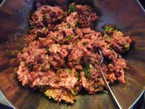
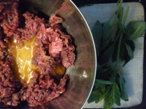
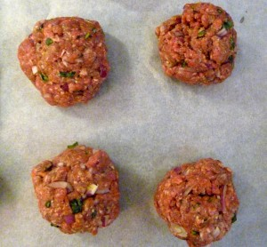
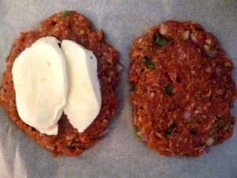
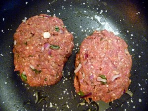
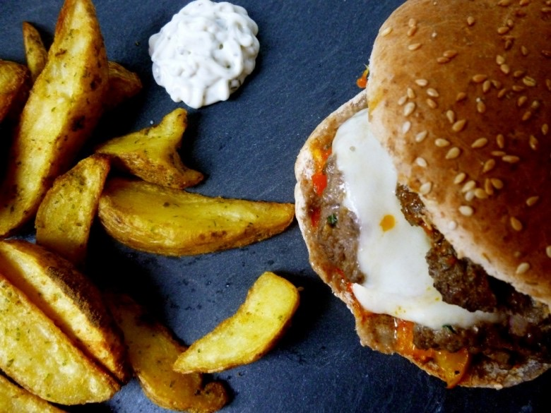

Hamburger sauce poivrons & steak mozza

Coucou tout le monde! Aujourd’hui je vous propose une recette de hamburger avec une sauce aux poivrons et un steak fourré à la mozzarella « miam »! Ah le macdo!! De temps en temps, pourquoi pas mais trop souvent je dis non! Pourtant le florida beef (burger de l’été chez macdo) me faisait de l’œil… Je me suis dit que du poivron dans un burger ça pouvait être très bon!
Et le résultat fut clairement au rendez vous! Alors je n’ai pas hésité une seconde pour partager avec vous cette recette!
Pour celles et ceux qui ont un peu de temps devant eux, retrouver ICI la recette des pains hamburgers
Ingrédients
- Gros Pains hamburgers - 4
- Poivrons rouges - 1 gros ou 2 petits
- Poivrons jaunes - 1 gros ou 2 petits
- Oeufs - 2
- Boeuf haché - 500g
- Basilic - 1 botte
- Parmesan - 4 càs
- Oignon rouge - 1
- Mozzarella - 1 boule
- Tomate - 2
- Tabasco - quelques gouttes
- Ail - 1 gousse
- Sel, poivre
Instructions
- Couper les poivrons en lamelles
- Les faire cuire à la poêle dans de l’huile d'olive à feu moyen
- Couper la tomate en petits morceaux et les mettre dans la poêle.
- Laisser mijoter
- Mélanger avec un peu de basilic du sel et du poivre (vous pouvez mixer le mélange si vous ne voulez pas de morceaux)
- Réserver
- Couper le basilic et l'oignon rouge en petits morceaux (réserver un peu d’oignons rouges pour le montage des burgers)
- Dans un récipient mélanger la viande hachée avec 2 jaunes d’œufs puis incorporer le basilic, l'oignon et les 4 càs de parmesan
- Bien mélanger
- Assaisonner selon vos goûts en sel et poivre
- Faire des boules de 125g chacune
- Couper la mozzarella en fines tranches
- Séparer chacune des boules de viandes en deux et les aplatir
- Déposer des tranches de mozzarella sur une des faces puis recouvrir avec l'autre
- Les cuire à la poêle (pour nous à point!!)
- Couper les pains à burger en deux
- Coté mie, les colorer avec un peu d’huile d'olive
- Déposer de la sauce aux poivrons sur la base des burgers, les steaks puis un peu d'oignons rouges
- Recouvrir d'une dernière couche de sauce
- Vous pouvez les enfourner 5 minutes à 180° afin que le tout soit bien chaud
- Refermer le burger avec le chapeau
- Servir avec une salade ou de bonnes frites 🙂






Les tips de la communauté
Burger original très apprécié avec une sauce poivrons délicieuse et steaks mozzarella tendres. La combinaison mozza/poivrons est une vraie tuerie. Testée et approuvée par beaucoup, même adaptée en version végane.
Astuces
- Les œufs dans la farce servent de liant uniquement - on ne sent pas le goût
- La sauce poivrons fonctionne parfaitement aussi sur un veggie burger
- Steak à la mozzarella peut aussi se faire en coupant les steaks en deux
- Tester le California Burger de McDonald's pour plus d'inspiration (avec guacamole)
Variantes suggérées
- Version végane avec steaks végan et la sauce poivrons
- Sans œufs en utilisant des steaks pré-coupés avec fromage fondu entre les deux